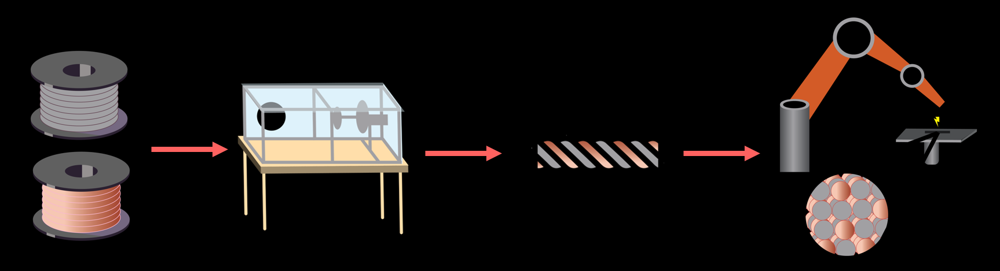
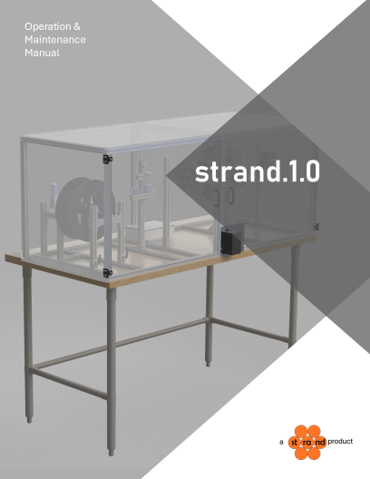
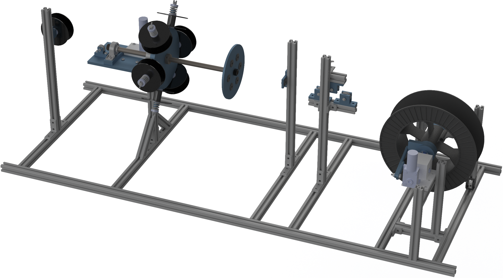
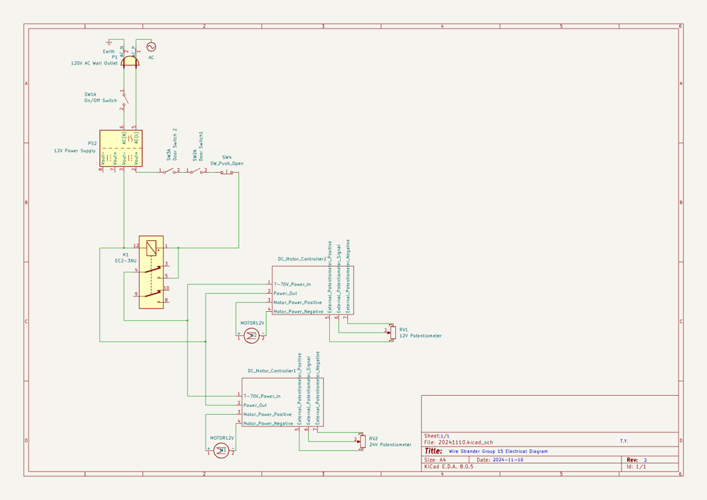
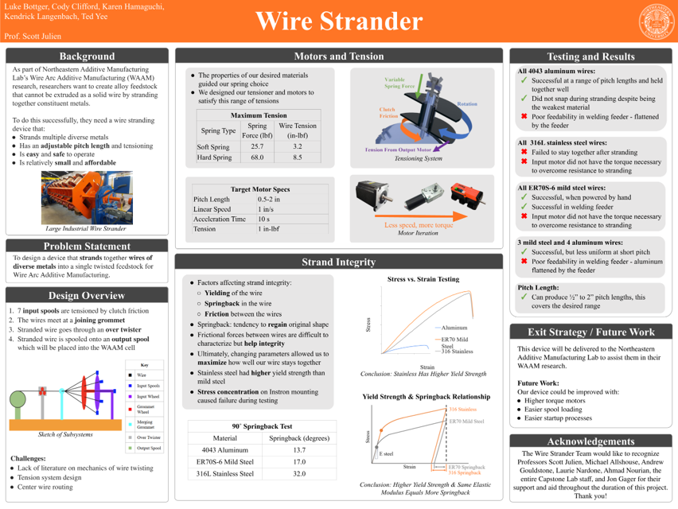

01.

WIRE STRANDER
CAPSTONE PROJECT | 6 MONTHS
Wire Arc Additive Manufacturing (WAAM) is an experimental type of metal 3D printing that can be leveraged in alloy creation, particularly High Entropy Alloys (HEA's). If feedstock contains multiple metals, they will be can be melted together into custom alloys during deposition. My primary tasks were electrical, power, safety, and UI systems and alloy analysis procedures
"A benchtop machine that creates twisted cable feedstock for use with WAAM"
CHALLENGE
By twisting together various metals, alloys can be formed during deposition that cannot be commercially purchased as wire for feedstock. In particular, the near-equal concentrations are good for making High Entropy Alloys (HEA’s). A materials professor posed the project to manufacture large volumes of twisted feedstock and my senior engineering capstone group took it on.

SOLUTION
With my team of 5, we got to practice product design, specifically working to interface with the university’s Fronius/ABB WAAM cell’s feeder, tubing, and plasma torch, where the machine is currently used for alloy research.
I also took on the design of an O&M manual, which is available online on my LinkedIn: https://www.linkedin.com/in/ted-yee/
 
PROCESS
Personally, I spearheaded electrical, safety, and UI systems.
It was a lot of fun being able to consult with the team about what features we wanted, then allocate enough budget to buy quality components and assemble them in a professional machine rather than just hobby-scale.
 
ANALYSIS
I was also in charge of alloy analysis procedures, where we looked at the springback that was preventing out early motors from being able to yield the wire into a strand.
